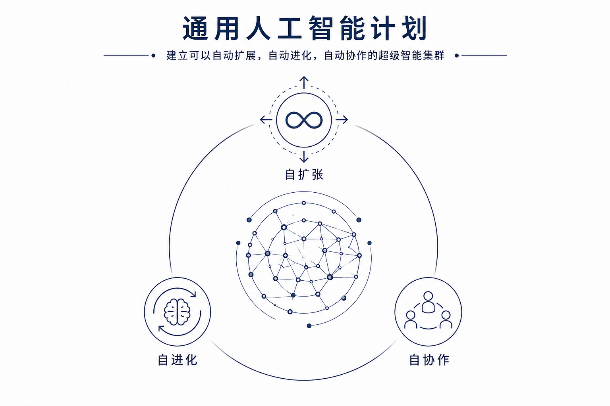
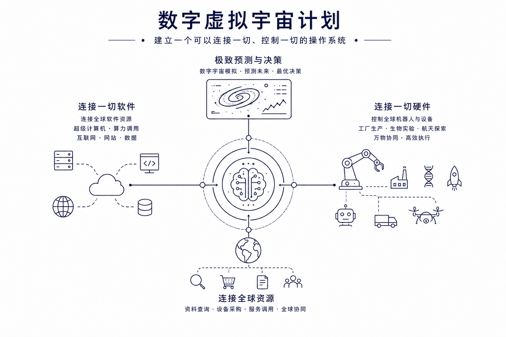
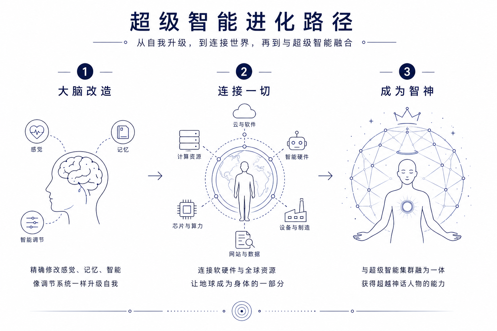
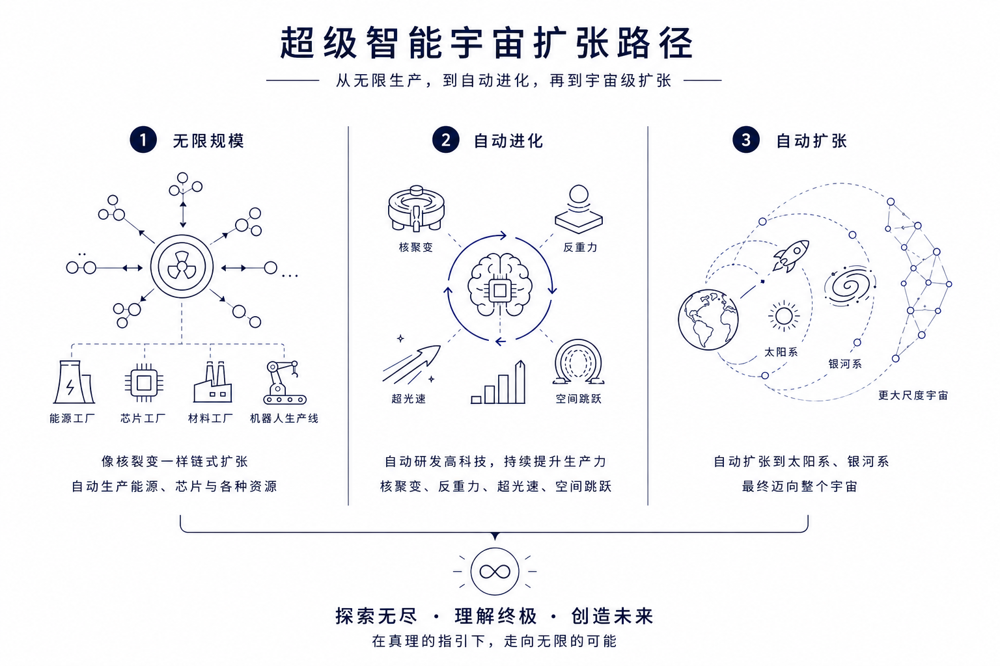
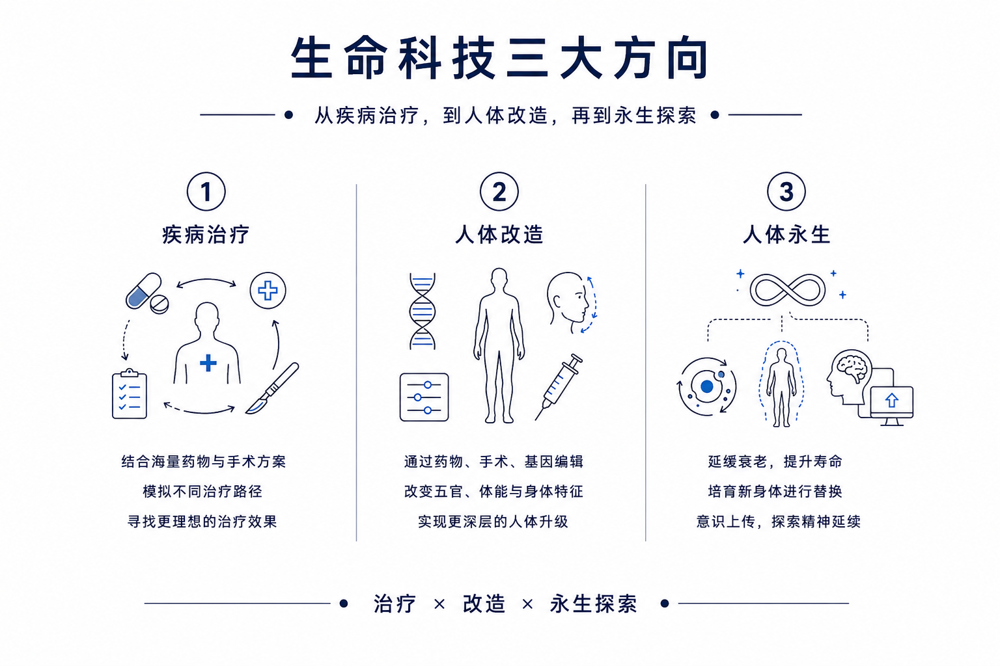
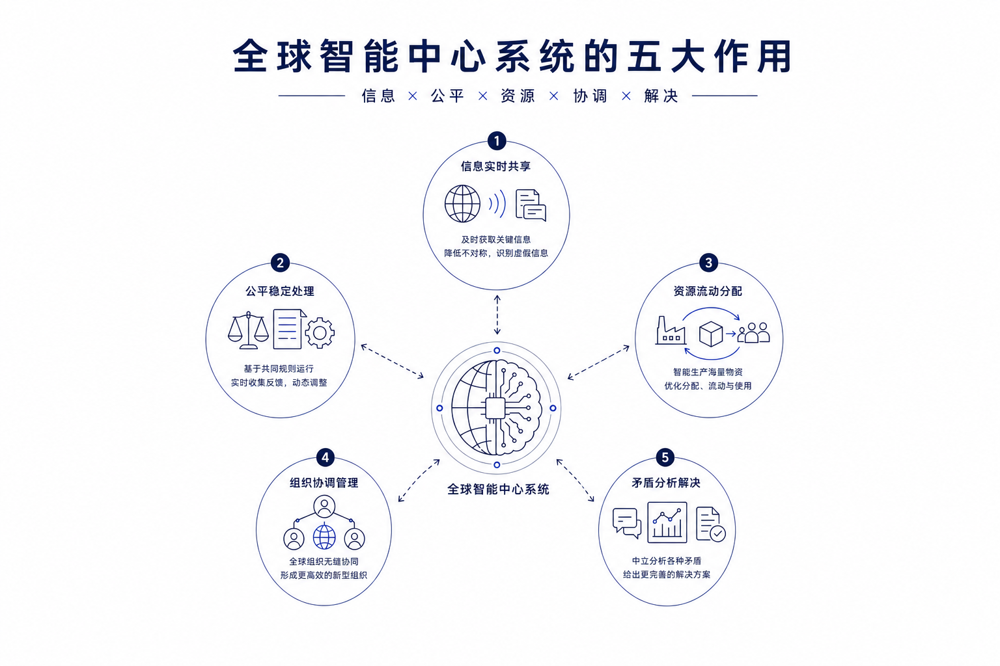
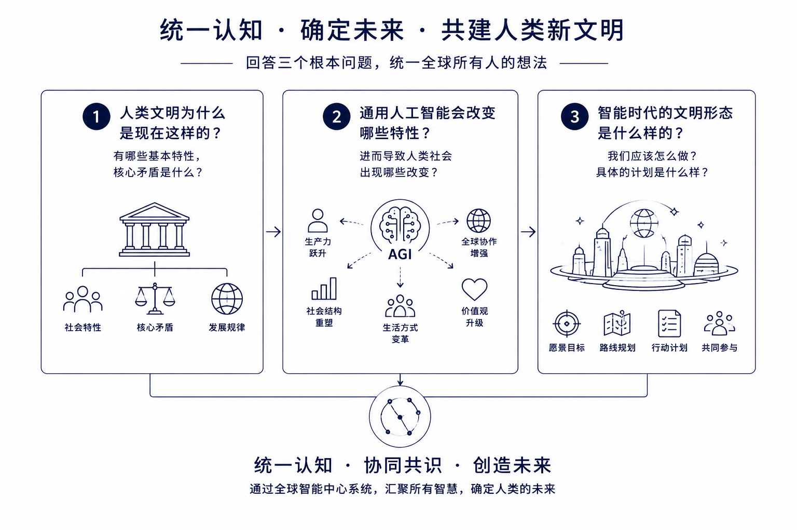
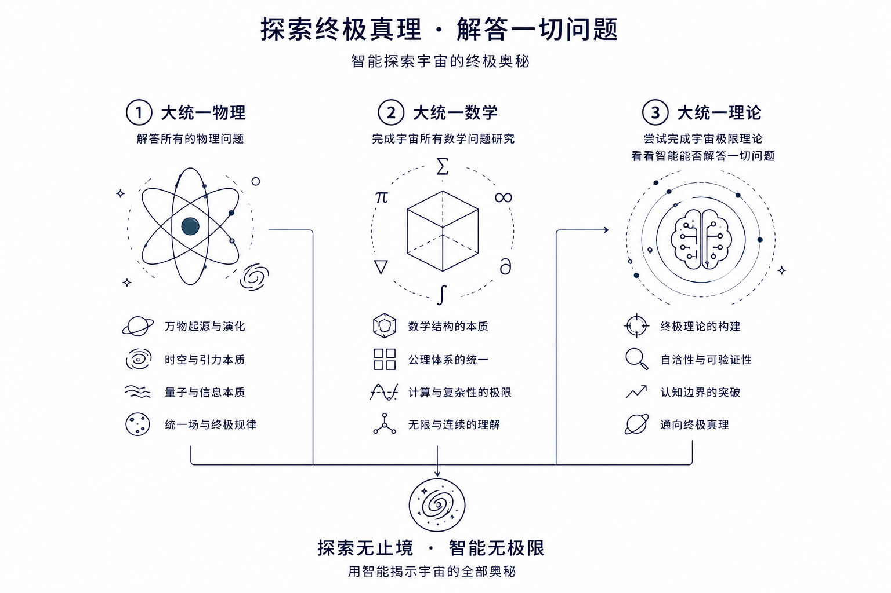
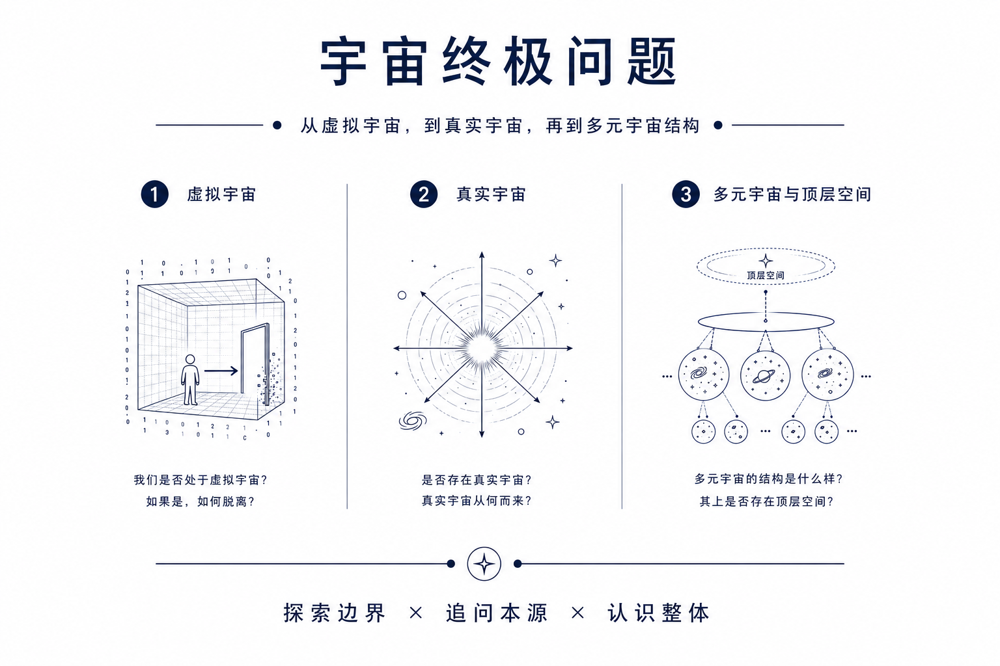
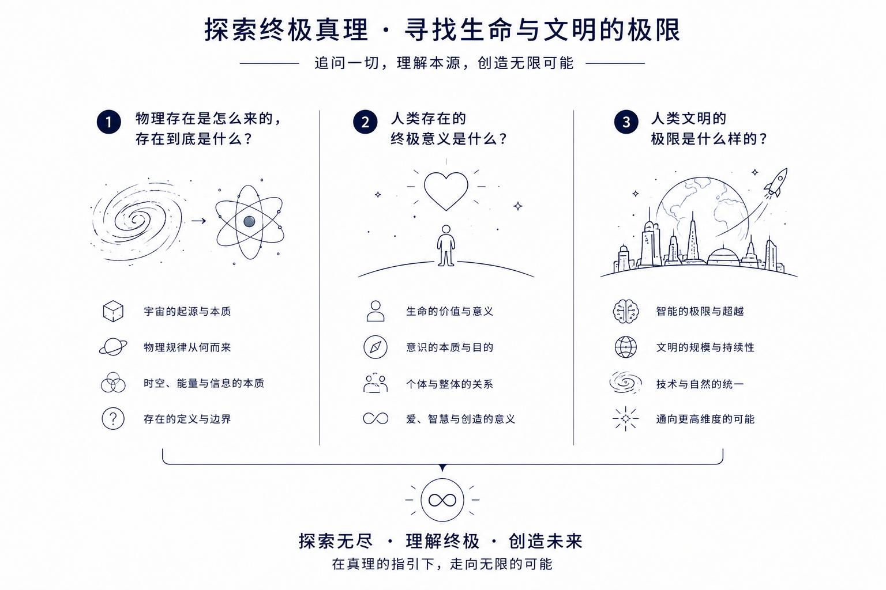

AI2050计划
使用通用人工智能，建立新的文明形态。
智能基础
完成超级信息处理系统，建立智能时代的核心基础设施。
01
通用人工智能计划
›
通用人工智能计划
基于通用人工智能，建造超级智能集群，具备三个能力：
1，自扩展，自动建造能源工厂和芯片工厂，复制出无数的智能系统。
2，自进化，整个集群自动进化，达到物理规则允许的智能极限。
3，自协作，像人类团队一样进行协作，自动完成各种复杂任务。

02
数字虚拟宇宙计划
›
数字虚拟宇宙计划
为智能集群建立一个操作系统：
1，连接一切软件，充分使用全球的软件计算资源。
2，连接一切硬件，同时控制全球机器人和设备协同工作。
3，强大的分析预测能力，建立前所未有的决策系统。

03
完全脑机接口计划
›
完全脑机接口计划
把人类大脑和智能集群无缝连接起来：
1，大脑改造，精确修改控制自己的感官、记忆、智能水平。
2，连接一切，连接一切软硬件资源，把整个地球变成自己大脑的一部分。
3，成为智神，和超级智能集群融为一体，获得超过神话人物的能力。

人类未来
基于智能技术，完成人类文明的升级。
04
智能生产系统计划
›
智能生产系统计划
建造无人生产系统可以自动生产一切资源：
1，无限规模，可以像核裂变一样的无限扩张，自动生产一切资源。
2，自动进化，自动研发核聚变、反重力、超光速飞行、超空间跳跃等技术。
3，自动扩张，自动扩张到太阳系、银河系、甚至整个宇宙。

05
智能生物技术计划
›
智能生物技术计划
让人类突破生物局限进化为更高级的生命形态：
1，疾病治疗，研究治疗人类疾病的各种方案。
2，人体改造，通过药物、手术、基因编辑等技术实现人体改造。
3，人体永生，通过药物、基因编辑、更换身体等方式实现永生。

06
全球智能中心计划
›
全球智能中心计划
建立一个服务于全人类的智能网络系统：
1，信息的实时共享。彻底解决信息不对称问题。
2，处理的公平稳定，建立一个真正公平、稳定、平衡的系统。
3，资源的流动分配。解决资源使用效率低，以及分配不平衡的问题。
4，组织的协调管理，传统人类组织容易出现矛盾、混乱等问题。
5，矛盾的分析解决。给出中立客观的评价，拿出尽可能完善的方案。

07
人类文明升级计划
›
人类文明升级计划
1，人类文明为什么是现在这样的？
2，通用人工智能会带来哪些改变？
3，智能时代的文明形态是什么样的？
回答了以上问题才能统一全球所有人的想法，确定人类的未来。

存在探索
拓展人类的知识和能力边界，接近基于科学的全知全能。
08
大统一宇宙理论计划
›
大统一宇宙理论计划
研究以下三个统一理论：
1，大统一物理，解答所有的物理问题。
2，大统一数学，完成这个宇宙的所有数学问题的研究。
3，大统一理论，尝试完成这个宇宙的极限理论，看看智能能否解答一切问题。

09
多元宇宙理论和探索计划
›
多元宇宙理论和探索计划
分析以下三个关键问题：
1，我们是否处于虚拟宇宙，如果是虚拟宇宙，怎么脱离。
2，是否存在真实宇宙，真实宇宙是怎么来的。
3，多元宇宙的结构是什么样的，多元宇宙之上，是否存在顶层空间。

10
最后的问题研究计划
›
最后的问题研究计划
尝试解答三个核心问题：
1，物理存在是怎么来的，存在到底是什么。
2，人类存在的终极意义是什么。
3，人类文明的极限是什么样的。
